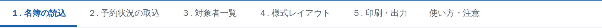
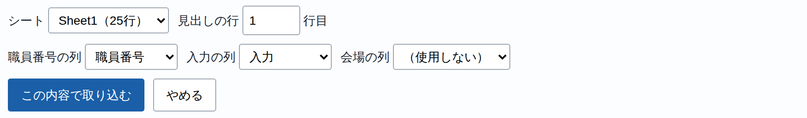
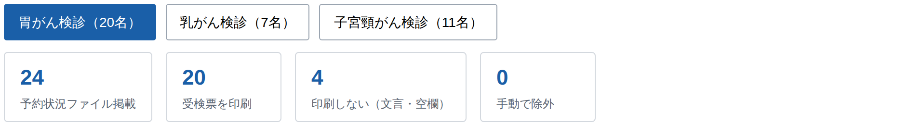
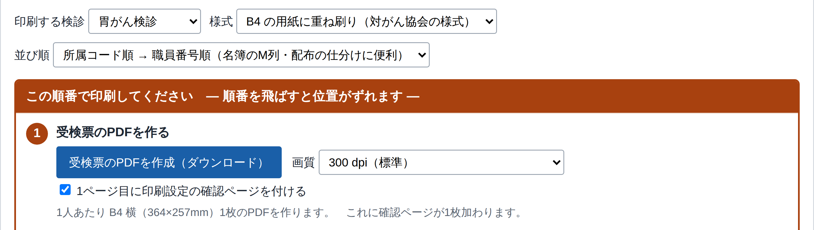
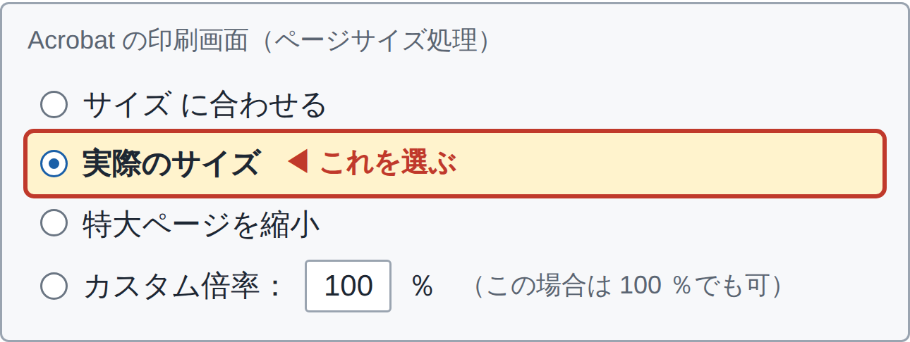
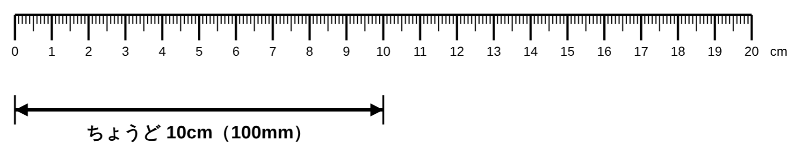

職員検診 受検票作成アプリ 操作マニュアル
対象：胃がん検診・乳がん検診・子宮頸がん検診（生活習慣病健診は受検票の印刷が不要です） ／
アプリ：kenshin.html をダブルクリックするとブラウザで開きます。
はじめに インターネットにはつながらず、名簿はこの端末の中だけで処理されます。読み込んだデータは
この端末に保存され、次に開いたときそのまま出てきます 。作業は下のタブを左から順に進めるだけ です。

タブは左から順に。「4. 様式レイアウト」は、印字位置がずれたときだけ使います（→ 2ページ目）。
作業の全体像
人事システム 名簿と予約状況を
▶
Excel Ctrl +A で全選択
▶
このアプリ 2つを読み込んで
▶
PDF ボタン1つで
▶
印刷 協会のB4用紙に
STEP 1 職員名簿を読み込む タブ「1. 名簿の読込」
人事システムの画面左上 で 「在職」「写真無」「詳細」 を選んで検索します。
表示された一覧の上で Ctrl +A → Ctrl +C 。Excel に貼り付けて保存します。
アプリの 「名簿ファイルを選択…」 で、その Excel を選びます（ドラッグ＆ドロップでも読み込めます）。
列の対応付けの画面が出ます。ふつうは直す必要がないので、そのまま 「この内容で読み込む」 を押します。
人数が出れば成功です。「エラー行」が 0 でないとき は、画面の下に出る一覧でその行だけ確認してください。
STEP 2 予約状況を取り込む タブ「2. 予約状況の取込」
人事システムの 「ヨ 予約管理」 を開き、「入力結果○ その1」 を選びます。
一覧の上で Ctrl +A → Excel に貼り付けて保存。胃がん検診用と婦人検診用の2ファイル を作ります。
アプリのそれぞれの枠で 「予約状況ファイルを選択…」 → 「この内容で取り込む」 を押します。

ファイルを選ぶと出てくる画面。シート・列はふつう自動で合っているので、そのまま「この内容で取り込む」。
受検票を印刷する人は、この予約状況ファイルの「入力」欄だけで決まります。
入力欄が空欄 の人と、「受診しない」「派遣元自治体で受診」 などの文言が入っている人は印刷されません。それ以外は全員印刷されます。婦人検診は1ファイルで2つの検診に自動で振り分けます。
入力欄に「35歳以上」とあれば乳がん・子宮頸がんの両方、「20歳以上」とあれば子宮頸がん検診だけが印刷されます。
STEP 3 対象者を確認する タブ「3. 対象者一覧」
検診ごとのボタンで切り替え、
人数 と、1人ずつの
受診日・受付時間 を確認します。
辞退・休職などで個別に外したい人は、表の左端
「対象」のチェックを外します （その人は印刷されません）。

STEP 4 PDFを作る タブ「5. 印刷・出力」
印刷する検診 を選びます（検診ごとに1回ずつ作ります）。並び順 を選びます。配布の仕分けをするなら 「所属コード順」 が便利です。「受検票のPDFを作成（ダウンロード）」 を押すと、PDFファイルが保存されます。

このあとの印刷のしかたが、いちばん間違えやすいところです。 画面の手順2〜5と、2ページ目を必ず読んでください。
いちばん大事：PDFの印刷のしかた
この2つを守らないと、必ず位置がずれます。 ① ブラウザでPDFを開いたまま印刷しない。 勝手に拡大・縮小されます。画面にPDFが出たときの「印刷」ボタンや
Ctrl +P は使いません。② プリンターは必ず複合機。 自分の席のプリンターなど、複合機以外で印刷するとずれます。印刷画面のいちばん上で確かめてください。
ダウンロードしたPDFを右クリック →「プログラムから開く」→「Adobe Acrobat」 で開き、プリンターに 複合機 を選んでから、
「ページサイズ処理」で 「実際のサイズ」 。用紙 B4 ・向き 横 。

Acrobat の「ページサイズ処理」。アプリの画面にも同じ図が出ています。
刷る前に、定規で1回だけ測る
PDFの1ページ目は、ものさしが刷られた確認用のページ です。まずこの1ページ目だけを白紙に印刷 して、定規を当ててください。

10cm の線がちょうど 10cm
設定は正しく出ています。そのまま2ページ目以降 を協会の用紙にセットして印刷してください。 長さが違う
倍率が変わっています。Acrobat の「実際のサイズ」を選び直して 、もう一度この1ページ目だけを印刷します。
確認ページの四隅のかぎ印 は用紙のふちから 15mm です。この確認だけは毎年やってください。
困ったときの早見表
こうなったら こうする 印字が全体的に小さい／大きい
ブラウザから印刷したか、複合機以外で印刷しています。 PDFをダウンロードし、Adobe Acrobat で開き、複合機を選んで「実際のサイズ」を選び直してください。倍率は合っているのに全体的にずれている
タブ「4. 様式レイアウト」の 「全体のずれ補正」 に、定規で測ったずれを mm で入力（右へずらすなら横をプラス、下なら縦をプラス）し、「この設定を保存」 を押します。動かそうとすると確認の画面が2回出ます 。 ひとつの項目だけ ずれている同じタブの用紙の絵の上で、その項目をドラッグ して動かし、「この設定を保存」を押します。 予約状況にいる職員が 名簿に見つからない と出る
タブ「2. 予約状況の取込」にその職員番号の一覧が出ます。退職・休職で名簿から外れている のか、名簿を取り直す必要がある のかを確認します。 対象者一覧に 「要確認」 と出る人がいる
入力欄の書き方が読み取れなかった人です。受検票は印刷されます ので、印刷後にその人の受診日・受付時間を目で確認してください。 去年のデータが残っている／
タブ「1. 名簿の読込」の 「保存データを消去」 で今年の分を入れ直します。
「サンプル名簿を読み込む」 を使うと、架空のデータで一通り試せます。
個人情報の取扱い
検診の情報は要配慮個人情報 です。共用のパソコンでは使わないでください。
名簿・予約状況はこの端末のブラウザの中に保存されるので、年度の作業が終わったら「保存データを消去」 を押してください。
出力したPDF・CSVの保存場所も、庁の情報セキュリティポリシーに従って管理してください。
作業チェックリスト
このページを印刷して、上から順に消しながら進めてください。
準備・取込
人事システムから名簿 を Excel に貼り付けて保存した
胃がん検診 の予約状況を Excel に保存した婦人検診 の予約状況を Excel に保存した去年のデータが残っていれば 「保存データを消去」 した
名簿を読み込み、エラー行が 0 だった
予約状況を 2ファイルとも 取り込んだ
対象者一覧で人数 を確認し、辞退・休職の人のチェックを外した
印刷
PDFをダウンロード した
PDFを Adobe Acrobat で開いた （ブラウザのままにしていない）
プリンターに 複合機 を選んだ
「実際のサイズ 」を選び、用紙 B4 ・向き 横 にした
1ページ目を白紙に刷り、10cm の線を定規で測った
2ページ目以降を協会の用紙に印刷した
印刷した枚数が人数と合っている ことを数えて確認した
数枚を抜き取り、氏名・所属・生年月日・年齢 を名簿と照合した